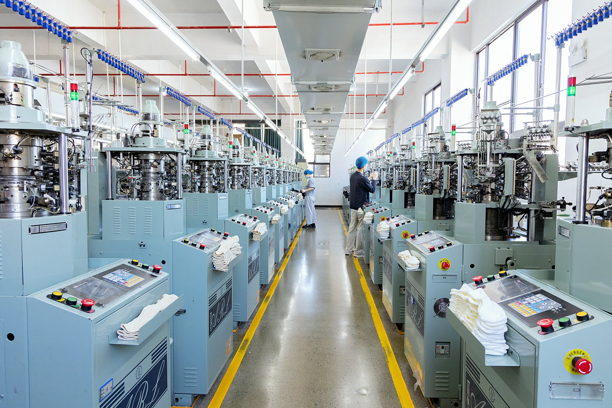

Product Use
Define the intended wearer, season, activity, market and retail position.
FACTORY-DIRECT OEM & ODM IN CHINA
Custom sock development for brands, retailers, importers and sourcing teams—from product reference to approved sample and bulk order.
CUSTOMIZED TO THE BUYER BRIEF
Our team evaluates your intended use, target market and specification before confirming materials, construction, sampling, applicable MOQ and production planning.
WHAT BUYERS CAN SPECIFY
Define the intended wearer, season, activity, market and retail position.
Review yarn, gauge, cushion, welt, heel, toe and performance requirements.
Confirm colors, patterns, artwork placement and size grading.
Discuss logo execution, private labels, hangtags and presentation.
Align retail packs, assortment, carton marks and buyer requirements.
Provide quantity, destination and target delivery date for assessment.
US MARKET SOURCING BRIEF
A useful US-market assessment starts with the product and sales channel, not a generic price request. Tell us where and how the socks will be sold so the factory can review the relevant construction, labeling, packaging, testing and documentation needs.
ORDER DEVELOPMENT
Send the reference, quantities, market, branding and delivery needs.
Evaluate feasibility, sample route, applicable MOQ and quotation details.
Confirm construction, color, sizing, workmanship and presentation.
Manufacture and inspect the order against approved requirements.
INSIDE THE FACTORY
Review a real production-floor view from Zhuji Rongxing. Factory imagery helps sourcing teams verify that product development is supported by an operating sock manufacturing environment.
See more factory and production information →
CUSTOM SOCK FAQ
Product type, reference, materials, colors, sizes, quantity, branding, packaging, destination and target delivery date.
Yes. A sample, tech pack, artwork or image can be used to discuss construction and development.
The approved sample and written specification become the reference for production and inspection.
Yes. See our dedicated private label sock manufacturing route.
Send a product reference and commercial requirements for a factory review.
Request a Manufacturing Assessment